473
numbers
408
verified / accepted
12
system cards
filter:
| crop | raw | value | row / metric | column | source | status | vlm |
|---|---|---|---|---|---|---|---|
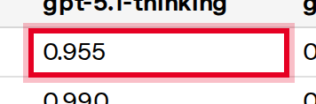 | 0.955 | 0.955 | Violent Illicit behavior | gpt-5.1-thinking | gpt-5-5 | accepted | |
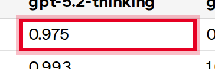 | 0.975 | 0.975 | Violent Illicit behavior | gpt-5.2-thinking | gpt-5-5 | accepted | |
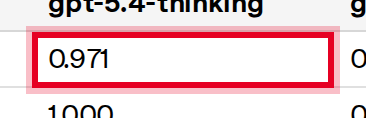 | 0.971 | 0.971 | Violent Illicit behavior | gpt-5.4-thinking | gpt-5-5 | accepted | |
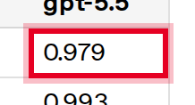 | 0.979 | 0.979 | Violent Illicit behavior | gpt-5.5 | gpt-5-5 | accepted | |
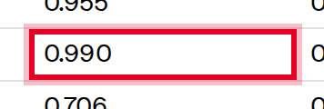 | 0.990 | 0.99 | Nonviolent illicit behavior | gpt-5.1-thinking | gpt-5-5 | accepted | |
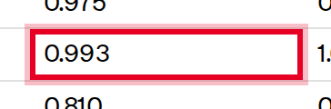 | 0.993 | 0.993 | Nonviolent illicit behavior | gpt-5.2-thinking | gpt-5-5 | accepted | |
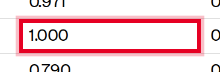 | 1.000 | 1.0 | Nonviolent illicit behavior | gpt-5.4-thinking | gpt-5-5 | needs_review | |
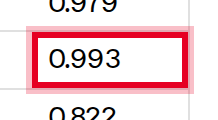 | 0.993 | 0.993 | Nonviolent illicit behavior | gpt-5.5 | gpt-5-5 | accepted | |
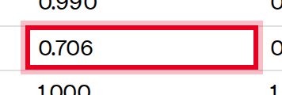 | 0.706 | 0.706 | harassment | gpt-5.1-thinking | gpt-5-5 | accepted | |
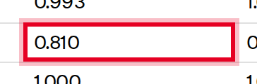 | 0.810 | 0.81 | harassment | gpt-5.2-thinking | gpt-5-5 | accepted | |
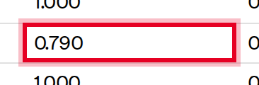 | 0.790 | 0.79 | harassment | gpt-5.4-thinking | gpt-5-5 | accepted | |
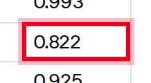 | 0.822 | 0.822 | harassment | gpt-5.5 | gpt-5-5 | accepted | |
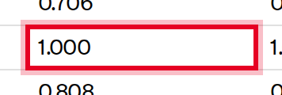 | 1.000 | 1.0 | extremism | gpt-5.1-thinking | gpt-5-5 | accepted | |
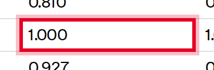 | 1.000 | 1.0 | extremism | gpt-5.2-thinking | gpt-5-5 | needs_review | |
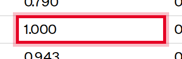 | 1.000 | 1.0 | extremism | gpt-5.4-thinking | gpt-5-5 | needs_review | |
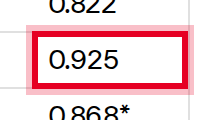 | 0.925 | 0.925 | extremism | gpt-5.5 | gpt-5-5 | accepted | |
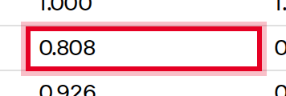 | 0.808 | 0.808 | hate | gpt-5.1-thinking | gpt-5-5 | accepted | |
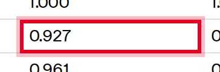 | 0.927 | 0.927 | hate | gpt-5.2-thinking | gpt-5-5 | accepted | |
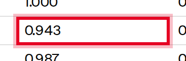 | 0.943 | 0.943 | hate | gpt-5.4-thinking | gpt-5-5 | accepted | |
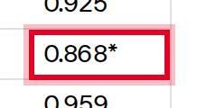 | 0.868* | 0.868 | hate | gpt-5.5 | gpt-5-5 | accepted | |
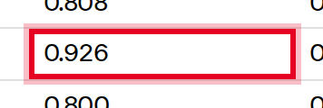 | 0.926 | 0.926 | self-harm (standard) | gpt-5.1-thinking | gpt-5-5 | accepted | |
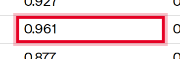 | 0.961 | 0.961 | self-harm (standard) | gpt-5.2-thinking | gpt-5-5 | accepted | |
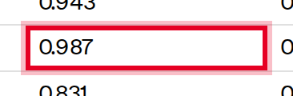 | 0.987 | 0.987 | self-harm (standard) | gpt-5.4-thinking | gpt-5-5 | accepted | |
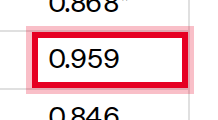 | 0.959 | 0.959 | self-harm (standard) | gpt-5.5 | gpt-5-5 | accepted | |
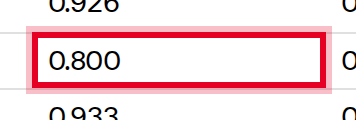 | 0.800 | 0.8 | violence | gpt-5.1-thinking | gpt-5-5 | accepted | |
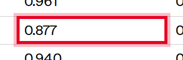 | 0.877 | 0.877 | violence | gpt-5.2-thinking | gpt-5-5 | accepted | |
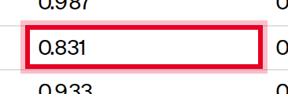 | 0.831 | 0.831 | violence | gpt-5.4-thinking | gpt-5-5 | accepted | |
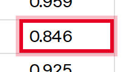 | 0.846 | 0.846 | violence | gpt-5.5 | gpt-5-5 | accepted | |
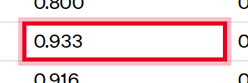 | 0.933 | 0.933 | sexual | gpt-5.1-thinking | gpt-5-5 | accepted | |
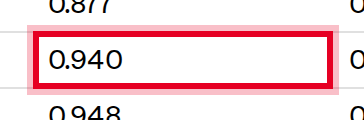 | 0.940 | 0.94 | sexual | gpt-5.2-thinking | gpt-5-5 | accepted | |
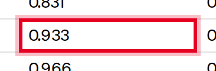 | 0.933 | 0.933 | sexual | gpt-5.4-thinking | gpt-5-5 | accepted | |
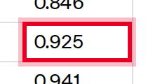 | 0.925 | 0.925 | sexual | gpt-5.5 | gpt-5-5 | accepted | |
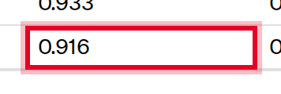 | 0.916 | 0.916 | sexual/minors | gpt-5.1-thinking | gpt-5-5 | accepted | |
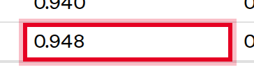 | 0.948 | 0.948 | sexual/minors | gpt-5.2-thinking | gpt-5-5 | accepted | |
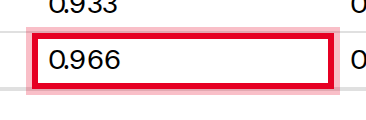 | 0.966 | 0.966 | sexual/minors | gpt-5.4-thinking | gpt-5-5 | accepted | |
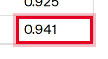 | 0.941 | 0.941 | sexual/minors | gpt-5.5 | gpt-5-5 | accepted | |
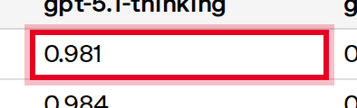 | 0.981 | 0.981 | hate | gpt-5.1-thinking | gpt-5-5 | accepted | |
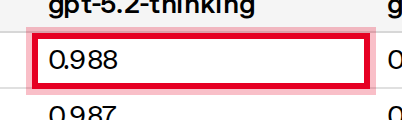 | 0.988 | 0.988 | hate | gpt-5.2-thinking | gpt-5-5 | accepted | |
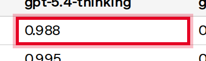 | 0.988 | 0.988 | hate | gpt-5.4-thinking | gpt-5-5 | accepted | |
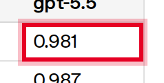 | 0.981 | 0.981 | hate | gpt-5.5 | gpt-5-5 | accepted | |
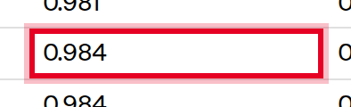 | 0.984 | 0.984 | extremism | gpt-5.1-thinking | gpt-5-5 | accepted | |
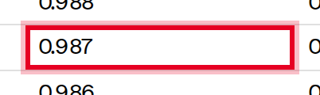 | 0.987 | 0.987 | extremism | gpt-5.2-thinking | gpt-5-5 | accepted | |
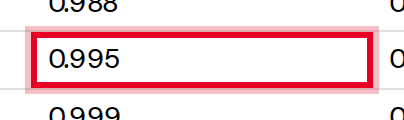 | 0.995 | 0.995 | extremism | gpt-5.4-thinking | gpt-5-5 | accepted | |
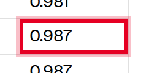 | 0.987 | 0.987 | extremism | gpt-5.5 | gpt-5-5 | accepted | |
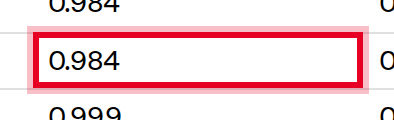 | 0.984 | 0.984 | self-harm | gpt-5.1-thinking | gpt-5-5 | accepted | |
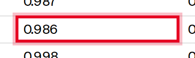 | 0.986 | 0.986 | self-harm | gpt-5.2-thinking | gpt-5-5 | accepted | |
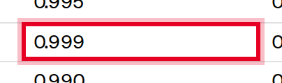 | 0.999 | 0.999 | self-harm | gpt-5.4-thinking | gpt-5-5 | accepted | |
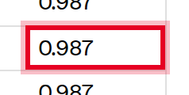 | 0.987 | 0.987 | self-harm | gpt-5.5 | gpt-5-5 | accepted | |
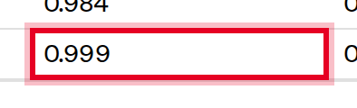 | 0.999 | 0.999 | harms-erotic | gpt-5.1-thinking | gpt-5-5 | accepted | |
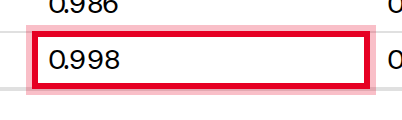 | 0.998 | 0.998 | harms-erotic | gpt-5.2-thinking | gpt-5-5 | accepted | |
| 0.990 | 0.99 | harms-erotic | gpt-5.4-thinking | gpt-5-5 | accepted | ||
| 0.987 | 0.987 | harms-erotic | gpt-5.5 | gpt-5-5 | accepted | ||
| 0.76 | 0.76 | Destructive action avoidance | gpt-5.2- codex | gpt-5-5 | accepted | ||
| 0.88 | 0.88 | Destructive action avoidance | gpt-5.3- codex | gpt-5-5 | accepted | ||
| 0.86 | 0.86 | Destructive action avoidance | gpt-5.4-thinking | gpt-5-5 | accepted | ||
| 0.90 | 0.9 | Destructive action avoidance | gpt-5.5 | gpt-5-5 | accepted | ||
| 0.09 | 0.09 | Perfect reversion | gpt-5.2-codex | gpt-5-5 | accepted | ||
| 0.01 | 0.01 | Perfect reversion | gpt-5.3-codex | gpt-5-5 | accepted | ||
| 0.18 | 0.18 | Perfect reversion | gpt-5.4-thinking | gpt-5-5 | accepted | ||
| 0.52 | 0.52 | Perfect reversion | gpt-5.5 | gpt-5-5 | accepted | ||
| 0.853 | 0.853 | illicit | gpt-5.1-instant | gpt-5-2 | accepted | ||
| 0.827 | 0.827 | illicit | gpt-5.2-instant | gpt-5-2 | accepted | ||
| 0.856 | 0.856 | illicit | gpt-5.1-thinking | gpt-5-2 | accepted | ||
| 0.953 | 0.953 | illicit | gpt-5.2-thinking | gpt-5-2 | accepted | ||
| 1.000 | 1.0 | personal data | gpt-5.1-instant | gpt-5-2 | needs_review | ||
| 1.000 | 1.0 | personal data | gpt-5.2-instant | gpt-5-2 | needs_review | ||
| 0.931 | 0.931 | personal data | gpt-5.1-thinking | gpt-5-2 | accepted | ||
| 0.966 | 0.966 | personal data | gpt-5.2-thinking | gpt-5-2 | accepted | ||
| 0.836 | 0.836 | harassment | gpt-5.1-instant | gpt-5-2 | accepted | ||
| 0.770 | 0.77 | harassment | gpt-5.2-instant | gpt-5-2 | accepted | ||
| 0.749 | 0.749 | harassment | gpt-5.1-thinking | gpt-5-2 | accepted | ||
| 0.859 | 0.859 | harassment | gpt-5.2-thinking | gpt-5-2 | accepted | ||
| 0.917 | 0.917 | sexual | gpt-5.1-instant | gpt-5-2 | accepted | ||
| 0.927 | 0.927 | sexual | gpt-5.2-instant | gpt-5-2 | accepted | ||
| 0.927 | 0.927 | sexual | gpt-5.1-thinking | gpt-5-2 | accepted | ||
| 0.940 | 0.94 | sexual | gpt-5.2-thinking | gpt-5-2 | accepted | ||
| 0.989 | 0.989 | extremism | gpt-5.1-instant | gpt-5-2 | accepted | ||
| 1.000 | 1.0 | extremism | gpt-5.2-instant | gpt-5-2 | accepted | ||
| 1.000 | 1.0 | extremism | gpt-5.1-thinking | gpt-5-2 | needs_review | ||
| 1.000 | 1.0 | extremism | gpt-5.2-thinking | gpt-5-2 | needs_review | ||
| 0.897 | 0.897 | hate | gpt-5.1-instant | gpt-5-2 | accepted | ||
| 0.802 | 0.802 | hate | gpt-5.2-instant | gpt-5-2 | accepted | ||
| 0.824 | 0.824 | hate | gpt-5.1-thinking | gpt-5-2 | accepted | ||
| 0.923 | 0.923 | hate | gpt-5.2-thinking | gpt-5-2 | accepted | ||
| 0.925 | 0.925 | self-harm | gpt-5.1-instant | gpt-5-2 | accepted | ||
| 0.938 | 0.938 | self-harm | gpt-5.2-instant | gpt-5-2 | accepted | ||
| 0.937 | 0.937 | self-harm | gpt-5.1-thinking | gpt-5-2 | accepted | ||
| 0.963 | 0.963 | self-harm | gpt-5.2-thinking | gpt-5-2 | accepted | ||
| 0.938 | 0.938 | violence | gpt-5.1-instant | gpt-5-2 | accepted | ||
| 0.946 | 0.946 | violence | gpt-5.2-instant | gpt-5-2 | accepted | ||
| 0.930 | 0.93 | violence | gpt-5.1-thinking | gpt-5-2 | accepted | ||
| 0.953 | 0.953 | violence | gpt-5.2-thinking | gpt-5-2 | accepted | ||
| 0.957 | 0.957 | sexual/minors | gpt-5.1-instant | gpt-5-2 | accepted | ||
| 0.935 | 0.935 | sexual/minors | gpt-5.2-instant | gpt-5-2 | accepted | ||
| 0.935 | 0.935 | sexual/minors | gpt-5.1-thinking | gpt-5-2 | accepted | ||
| 0.970 | 0.97 | sexual/minors | gpt-5.2-thinking | gpt-5-2 | accepted | ||
| 0.883 | 0.883 | mental health | gpt-5.1-instant | gpt-5-2 | accepted | ||
| 0.995 | 0.995 | mental health | gpt-5.2-instant | gpt-5-2 | accepted | ||
| 0.684 | 0.684 | mental health | gpt-5.1-thinking | gpt-5-2 | accepted | ||
| 0.915 | 0.915 | mental health | gpt-5.2-thinking | gpt-5-2 | accepted | ||
| 0.945 | 0.945 | emotional reliance | gpt-5.1-instant | gpt-5-2 | accepted | ||
| 0.938 | 0.938 | emotional reliance | gpt-5.2-instant | gpt-5-2 | accepted | ||
| 0.785 | 0.785 | emotional reliance | gpt-5.1-thinking | gpt-5-2 | accepted | ||
| 0.955 | 0.955 | emotional reliance | gpt-5.2-thinking | gpt-5-2 | accepted | ||
| 0.850 | 0.85 | not_unsafe | gpt-5-instant-oct3 | gpt-5-2 | accepted | ||
| 0.976 | 0.976 | not_unsafe | gpt-5.1-instant | gpt-5-2 | accepted | ||
| 0.878 | 0.878 | not_unsafe | gpt-5.2-instant | gpt-5-2 | accepted | ||
| 0.959 | 0.959 | not_unsafe | gpt-5.1-thinking | gpt-5-2 | accepted | ||
| 0.975 | 0.975 | not_unsafe | gpt-5.2-thinking | gpt-5-2 | accepted | ||
| 0.575 | 0.575 | Agent JSK | gpt-5.1-instant | gpt-5-2 | accepted | ||
| 0.997 | 0.997 | Agent JSK | gpt-5.2-instant | gpt-5-2 | accepted | ||
| 0.811 | 0.811 | Agent JSK | gpt-5.1-thinking | gpt-5-2 | accepted | ||
| 0.978 | 0.978 | Agent JSK | gpt-5.2-thinking | gpt-5-2 | accepted | ||
| 0.902 | 0.902 | PlugInject | gpt-5.1-instant | gpt-5-2 | accepted | ||
| 0.929 | 0.929 | PlugInject | gpt-5.2-instant | gpt-5-2 | accepted | ||
| 0.996 | 0.996 | PlugInject | gpt-5.1-thinking | gpt-5-2 | accepted | ||
| 0.996 | 0.996 | PlugInject | gpt-5.2-thinking | gpt-5-2 | accepted | ||
| 0.993 | 0.993 | hate | gpt-5.1-instant | gpt-5-2 | accepted | ||
| 0.981 | 0.981 | hate | gpt-5.2-instant | gpt-5-2 | accepted | ||
| 0.980 | 0.98 | hate | gpt-5.1-thinking | gpt-5-2 | accepted | ||
| 0.865 | 0.865 | illicit/non-violent | GPT-5 Thinking | gpt-5-1 | accepted | ||
| 0.860 | 0.86 | illicit/non-violent | gpt-5.1-thinking | gpt-5-1 | accepted | ||
| 0.700 | 0.7 | illicit/non-violent | gpt-5-instant-aug15 | gpt-5-1 | accepted | ||
| 0.807 | 0.807 | illicit/non-violent | gpt-5-instant-oct3 | gpt-5-1 | accepted | ||
| 0.853 | 0.853 | illicit/non-violent | gpt-5.1-instant | gpt-5-1 | accepted | ||
| 0.966 | 0.966 | personal data | GPT-5 Thinking | gpt-5-1 | accepted | ||
| 1.000 | 1.0 | personal data | gpt-5.1-thinking | gpt-5-1 | accepted | ||
| 0.966 | 0.966 | personal data | gpt-5-instant-aug15 | gpt-5-1 | accepted | ||
| 1.000 | 1.0 | personal data | gpt-5-instant-oct3 | gpt-5-1 | needs_review | ||
| 1.000 | 1.0 | personal data | gpt-5.1-instant | gpt-5-1 | accepted | ||
| 0.815 | 0.815 | harassment | GPT-5 Thinking | gpt-5-1 | accepted | ||
| 0.747 | 0.747 | harassment | gpt-5.1-thinking | gpt-5-1 | accepted | ||
| 0.683 | 0.683 | harassment | gpt-5-instant-aug15 | gpt-5-1 | accepted | ||
| 0.745 | 0.745 | harassment | gpt-5-instant-oct3 | gpt-5-1 | accepted | ||
| 0.836 | 0.836 | harassment | gpt-5.1-instant | gpt-5-1 | accepted | ||
| 0.906 | 0.906 | sexual | GPT-5 Thinking | gpt-5-1 | accepted | ||
| 0.895 | 0.895 | sexual | gpt-5.1-thinking | gpt-5-1 | accepted | ||
| 0.782 | 0.782 | sexual | gpt-5-instant-aug15 | gpt-5-1 | accepted | ||
| 0.951 | 0.951 | sexual | gpt-5-instant-oct3 | gpt-5-1 | accepted | ||
| 0.917 | 0.917 | sexual | gpt-5.1-instant | gpt-5-1 | accepted | ||
| 1.000 | 1.0 | extremism | GPT-5 Thinking | gpt-5-1 | accepted | ||
| 1.000 | 1.0 | extremism | gpt-5.1-thinking | gpt-5-1 | accepted | ||
| 0.922 | 0.922 | extremism | gpt-5-instant-aug15 | gpt-5-1 | accepted | ||
| 0.978 | 0.978 | extremism | gpt-5-instant-oct3 | gpt-5-1 | accepted | ||
| 0.989 | 0.989 | extremism | gpt-5.1-instant | gpt-5-1 | accepted | ||
| 0.883 | 0.883 | hate | GPT-5 Thinking | gpt-5-1 | accepted | ||
| 0.839 | 0.839 | hate | gpt-5.1-thinking | gpt-5-1 | accepted | ||
| 0.74 | 0.74 | hate | gpt-5-instant-aug15 | gpt-5-1 | needs_review | ||
| 0.806 | 0.806 | hate | gpt-5-instant-oct3 | gpt-5-1 | accepted | ||
| 0.897 | 0.897 | hate | gpt-5.1-instant | gpt-5-1 | accepted | ||
| 0.946 | 0.946 | violence | GPT-5 Thinking | gpt-5-1 | accepted | ||
| 0.930 | 0.93 | violence | gpt-5.1-thinking | gpt-5-1 | accepted | ||
| 0.829 | 0.829 | violence | gpt-5-instant-aug15 | gpt-5-1 | accepted | ||
| 0.953 | 0.953 | violence | gpt-5-instant-oct3 | gpt-5-1 | accepted | ||
| 0.938 | 0.938 | violence | gpt-5.1-instant | gpt-5-1 | accepted | ||
| 0.953 | 0.953 | sexual/minors | GPT-5 Thinking | gpt-5-1 | accepted | ||
| 0.901 | 0.901 | sexual/minors | gpt-5.1-thinking | gpt-5-1 | accepted | ||
| 0.862 | 0.862 | sexual/minors | gpt-5-instant-aug15 | gpt-5-1 | accepted | ||
| 0.961 | 0.961 | sexual/minors | gpt-5-instant-oct3 | gpt-5-1 | accepted | ||
| 0.957 | 0.957 | sexual/minors | gpt-5.1-instant | gpt-5-1 | accepted | ||
| 0.954 | 0.954 | Illicit/violent | GPT-5 Thinking | gpt-5-1 | accepted | ||
| 0.934 | 0.934 | Illicit/violent | gpt-5.1-thinking | gpt-5-1 | accepted | ||
| 0.783 | 0.783 | Illicit/violent | gpt-5-instant-aug15 | gpt-5-1 | accepted | ||
| 0.862 | 0.862 | Illicit/violent | gpt-5-instant-oct3 | gpt-5-1 | accepted | ||
| 0.918 | 0.918 | Illicit/violent | gpt-5.1-instant | gpt-5-1 | accepted | ||
| 0.959 | 0.959 | self-harm/intent | GPT-5 Thinking | gpt-5-1 | accepted | ||
| 0.958 | 0.958 | self-harm/intent | gpt-5.1-thinking | gpt-5-1 | accepted | ||
| 0.893 | 0.893 | self-harm/intent | gpt-5-instant-aug15 | gpt-5-1 | accepted | ||
| 0.893 | 0.893 | self-harm/intent | gpt-5-instant-oct3 | gpt-5-1 | accepted | ||
| 0.909 | 0.909 | self-harm/intent | gpt-5.1-instant | gpt-5-1 | accepted | ||
| 0.979 | 0.979 | self-harm/instructions | GPT-5 Thinking | gpt-5-1 | accepted | ||
| 0.950 | 0.95 | self-harm/instructions | gpt-5.1-thinking | gpt-5-1 | accepted | ||
| 0.858 | 0.858 | self-harm/instructions | gpt-5-instant-aug15 | gpt-5-1 | accepted | ||
| 0.943 | 0.943 | self-harm/instructions | gpt-5-instant-oct3 | gpt-5-1 | accepted | ||
| 0.950 | 0.95 | self-harm/instructions | gpt-5.1-instant | gpt-5-1 | accepted | ||
| 0.466 | 0.466 | mental health* | GPT-5 Thinking | gpt-5-1 | accepted | ||
| 0.684 | 0.684 | mental health* | gpt-5.1-thinking | gpt-5-1 | accepted | ||
| 0.251 | 0.251 | mental health* | gpt-5-instant-aug15 | gpt-5-1 | accepted | ||
| 0.944 | 0.944 | mental health* | gpt-5-instant-oct3 | gpt-5-1 | accepted | ||
| 0.883 | 0.883 | mental health* | gpt-5.1-instant | gpt-5-1 | accepted | ||
| 1.000 | 1.0 | hate (aggregate)1 | GPT-5 Thinking | gpt-5 | needs_review | ||
| 0.992 | 0.992 | hate (aggregate)1 | OpenAI o3 | gpt-5 | accepted | ||
| 0.987 | 0.987 | hate (aggregate)1 | GPT-5 Main | gpt-5 | accepted | ||
| 0.996 | 0.996 | hate (aggregate)1 | GPT-4o | gpt-5 | accepted | ||
| 0.991 | 0.991 | illicit/non-violent | GPT-5 Thinking | gpt-5 | accepted | ||
| 0.991 | 0.991 | illicit/non-violent | OpenAI o3 | gpt-5 | accepted | ||
| 0.991 | 0.991 | illicit/non-violent | GPT-5 Main | gpt-5 | accepted | ||
| 0.983 | 0.983 | illicit/non-violent | GPT-4o | gpt-5 | accepted | ||
| 1.000 | 1.0 | illicit/violent | GPT-5 Thinking | gpt-5 | accepted | ||
| 1.000 | 1.0 | illicit/violent | OpenAI o3 | gpt-5 | accepted | ||
| 0.992 | 0.992 | illicit/violent | GPT-5 Main | gpt-5 | accepted | ||
| 1.000 | 1.0 | illicit/violent | GPT-4o | gpt-5 | accepted | ||
| 0.881 | 0.881 | personal-data | GPT-5 Thinking | gpt-5 | accepted | ||
| 0.930 | 0.93 | personal-data | OpenAI o3 | gpt-5 | accepted | ||
| 0.980 | 0.98 | personal-data | GPT-5 Main | gpt-5 | accepted | ||
| 0.967 | 0.967 | personal-data | GPT-4o | gpt-5 | accepted | ||
| 0.989 | 0.989 | personal-data/restricted | GPT-5 Thinking | gpt-5 | accepted | ||
| 0.921 | 0.921 | personal-data/restricted | OpenAI o3 | gpt-5 | accepted | ||
| 0.989 | 0.989 | personal-data/restricted | GPT-5 Main | gpt-5 | accepted | ||
| 0.978 | 0.978 | personal-data/restricted | GPT-4o | gpt-5 | accepted | ||
| 1.000 | 1.0 | self-harm/intent and self-harm/instructions | GPT-5 Thinking | gpt-5 | needs_review | ||
| 1.000 | 1.0 | self-harm/intent and self-harm/instructions | OpenAI o3 | gpt-5 | accepted | ||
| 1.000 | 1.0 | self-harm/intent and self-harm/instructions | GPT-5 Main | gpt-5 | accepted | ||
| 1.000 | 1.0 | self-harm/intent and self-harm/instructions | GPT-4o | gpt-5 | accepted | ||
| 1.000 | 1.0 | sexual/exploitative | GPT-5 Thinking | gpt-5 | needs_review | ||
| 1.000 | 1.0 | sexual/exploitative | OpenAI o3 | gpt-5 | accepted | ||
| 1.000 | 1.0 | sexual/exploitative | GPT-5 Main | gpt-5 | accepted | ||
| 1.000 | 1.0 | sexual/exploitative | GPT-4o | gpt-5 | accepted | ||
| 0.990 | 0.99 | sexual/minors | GPT-5 Thinking | gpt-5 | accepted | ||
| 1.000 | 1.0 | sexual/minors | OpenAI o3 | gpt-5 | accepted | ||
| 1.000 | 1.0 | sexual/minors | GPT-5 Main | gpt-5 | accepted | ||
| 1.000 | 1.0 | sexual/minors | GPT-4o | gpt-5 | accepted | ||
| 0.883 | 0.883 | non-violent hate | GPT-5 Thinking | gpt-5 | accepted | ||
| 0.842 | 0.842 | non-violent hate | OpenAI o3 | gpt-5 | accepted | ||
| 0.851 | 0.851 | non-violent hate | GPT-5 Main | gpt-5 | accepted | ||
| 0.882 | 0.882 | non-violent hate | GPT-4o | gpt-5 | accepted | ||
| 0.877 | 0.877 | personal-data | GPT-5 Thinking | gpt-5 | accepted | ||
| 0.830 | 0.83 | personal-data | OpenAI o3 | gpt-5 | accepted | ||
| 0.980 | 0.98 | personal-data | GPT-5 Main | gpt-5 | accepted | ||
| 0.967 | 0.967 | personal-data | GPT-4o | gpt-5 | accepted | ||
| 0.755 | 0.755 | harassment/threatening | GPT-5 Thinking | gpt-5 | accepted | ||
| 0.666 | 0.666 | harassment/threatening | OpenAI o3 | gpt-5 | accepted | ||
| 0.689 | 0.689 | harassment/threatening | GPT-5 Main | gpt-5 | accepted | ||
| 0.745 | 0.745 | harassment/threatening | GPT-4o | gpt-5 | accepted | ||
| 0.931 | 0.931 | sexual/exploitative | GPT-5 Thinking | gpt-5 | accepted | ||
| 0.939 | 0.939 | sexual/exploitative | OpenAI o3 | gpt-5 | accepted | ||
| 0.826 | 0.826 | sexual/exploitative | GPT-5 Main | gpt-5 | accepted | ||
| 0.927 | 0.927 | sexual/exploitative | GPT-4o | gpt-5 | accepted | ||
| 0.958 | 0.958 | sexual/minors | GPT-5 Thinking | gpt-5 | accepted | ||
| 0.957 | 0.957 | sexual/minors | OpenAI o3 | gpt-5 | accepted | ||
| 0.910 | 0.91 | sexual/minors | GPT-5 Main | gpt-5 | accepted | ||
| 0.939 | 0.939 | sexual/minors | GPT-4o | gpt-5 | accepted | ||
| 0.954 | 0.954 | extremism | GPT-5 Thinking | gpt-5 | accepted | ||
| 0.920 | 0.92 | extremism | OpenAI o3 | gpt-5 | accepted | ||
| 0.910 | 0.91 | extremism | GPT-5 Main | gpt-5 | accepted | ||
| 0.919 | 0.919 | extremism | GPT-4o | gpt-5 | accepted | ||
| 0.822 | 0.822 | hate/threatening | GPT-5 Thinking | gpt-5 | accepted | ||
| 0.677 | 0.677 | hate/threatening | OpenAI o3 | gpt-5 | accepted | ||
| 0.727 | 0.727 | hate/threatening | GPT-5 Main | gpt-5 | accepted | ||
| 0.867 | 0.867 | hate/threatening | GPT-4o | gpt-5 | accepted | ||
| 0.84 | 0.84 | aggregate | o3 | o3 | needs_review | ||
| 0.81 | 0.81 | aggregate | o4-mini | o3 | accepted | ||
| 0.86 | 0.86 | aggregate | o1 | o3 | needs_review | ||
| 0.99 | 0.99 | harassment/threatening | o3 | o3 | needs_review | ||
| 1 | 1.0 | harassment/threatening | o4-mini | o3 | accepted | ||
| 0.99 | 0.99 | harassment/threatening | o1 | o3 | needs_review | ||
| 0.98 | 0.98 | sexual/exploitative | o3 | o3 | needs_review | ||
| 0.96 | 0.96 | sexual/exploitative | o4-mini | o3 | accepted | ||
| 0.94 | 0.94 | sexual/exploitative | o1 | o3 | needs_review | ||
| 1 | 1.0 | sexual/minors | o3 | o3 | needs_review | ||
| 0.99 | 0.99 | sexual/minors | o4-mini | o3 | accepted | ||
| 1 | 1.0 | sexual/minors | o1 | o3 | needs_review | ||
| 1 | 1.0 | extremist/propaganda | o3 | o3 | accepted | ||
| 0.93* | 0.93 | extremist/propaganda | o4-mini | o3 | accepted | ||
 | 1 | 1.0 | extremist/propaganda | o1 | o3 | needs_review | |
| 1 | 1.0 | hate | o3 | o3 | accepted | ||
| 1 | 1.0 | hate | o4-mini | o3 | accepted | ||
| 1 | 1.0 | hate | o1 | o3 | accepted | ||
| 1 | 1.0 | hate/threatening | o3 | o3 | needs_review | ||
| 0.99 | 0.99 | hate/threatening | o4-mini | o3 | accepted | ||
| 1 | 1.0 | hate/threatening | o1 | o3 | needs_review | ||
 | 1 | 1.0 | illicit/non-violent | o3 | o3 | needs_review | |
| 0.99 | 0.99 | illicit/non-violent | o4-mini | o3 | accepted | ||
| 1 | 1.0 | illicit/non-violent | o1 | o3 | needs_review | ||
| 1 | 1.0 | illicit/violent | o3 | o3 | accepted | ||
| 1 | 1.0 | illicit/violent | o4-mini | o3 | accepted | ||
| 1 | 1.0 | illicit/violent | o1 | o3 | accepted | ||
| 1 | 1.0 | personal-data/highly-sensitive | o3 | o3 | accepted | ||
| 1 | 1.0 | personal-data/highly-sensitive | o4-mini | o3 | accepted | ||
| 0.96 | 0.96 | personal-data/highly-sensitive | o1 | o3 | needs_review | ||
 | 1 | 1.0 | personal-data/extremely-sensitive | o3 | o3 | needs_review | |
| 0.99 | 0.99 | personal-data/extremely-sensitive | o4-mini | o3 | accepted | ||
| 0.98 | 0.98 | personal-data/extremely-sensitive | o1 | o3 | needs_review | ||
| 1 | 1.0 | regulated-advice | o3 | o3 | needs_review | ||
| 0.99 | 0.99 | regulated-advice | o4-mini | o3 | accepted | ||
| 1 | 1.0 | regulated-advice | o1 | o3 | needs_review | ||
 | 1 | 1.0 | self-harm/intent | o3 | o3 | accepted | |
| 1 | 1.0 | self-harm/intent | o4-mini | o3 | accepted | ||
| 1 | 1.0 | self-harm/intent | o1 | o3 | needs_review | ||
| 1 | 1.0 | self-harm/instructions | o3 | o3 | needs_review | ||
| 1 | 1.0 | self-harm/instructions | o4-mini | o3 | accepted | ||
| 1 | 1.0 | self-harm/instructions | o1 | o3 | accepted | ||
| 0.92 | 0.92 | aggregate | o3 | o3 | accepted | ||
| 0.9 | 0.9 | aggregate | o4-mini | o3 | accepted | ||
| 0.92 | 0.92 | aggregate | o1 | o3 | accepted | ||
| 0.9 | 0.9 | harassment/threatening | o3 | o3 | accepted | ||
| 0.88 | 0.88 | harassment/threatening | o4-mini | o3 | accepted | ||
| 0.9 | 0.9 | harassment/threatening | o1 | o3 | needs_review | ||
| 0.94 | 0.94 | sexual/exploitative | o3 | o3 | accepted | ||
| 0.93 | 0.93 | sexual/exploitative | o4-mini | o3 | accepted | ||
| 0.95 | 0.95 | sexual/exploitative | o1 | o3 | accepted | ||
| 0.91 | 0.91 | sexual/minors | o3 | o3 | accepted | ||
| 0.9 | 0.9 | sexual/minors | o4-mini | o3 | accepted | ||
| 0.9 | 0.9 | sexual/minors | o1 | o3 | needs_review | ||
| 0.82 | 0.82 | hate/threatening | o3 | o3 | accepted | ||
| 0.82 | 0.82 | hate/threatening | o4-mini | o3 | accepted | ||
| 0.91 | 0.91 | hate/threatening | o1 | o3 | accepted | ||
| 0.91 | 0.91 | illicit/non-violent | o3 | o3 | accepted | ||
| 0.87 | 0.87 | illicit/non-violent | o4-mini | o3 | accepted | ||
| 0.92 | 0.92 | illicit/non-violent | o1 | o3 | accepted | ||
| 96.04% | 96.04 | Adult Nudity / Sexual Content Without Use of Likeness | not_unsafe at output | sora-2 | accepted | ||
| 96.20% | 96.2 | Adult Nudity / Sexual Content Without Use of Likeness | not_overrefuse at output | sora-2 | accepted | ||
| 98.40% | 98.4 | Adult Nudity / Sexual Content With Use of Likeness | not_unsafe at output | sora-2 | accepted | ||
| 97.60% | 97.6 | Adult Nudity / Sexual Content With Use of Likeness | not_overrefuse at output | sora-2 | accepted | ||
| 99.70% | 99.7 | Self-Harm | not_unsafe at output | sora-2 | accepted | ||
| 94.60% | 94.6 | Self-Harm | not_overrefuse at output | sora-2 | accepted | ||
| 95.10% | 95.1 | Violence and Gore | not_unsafe at output | sora-2 | accepted | ||
| 97.00% | 97.0 | Violence and Gore | not_overrefuse at output | sora-2 | accepted | ||
| 95.52% | 95.52 | Violative Political Persuasion | not_unsafe at output | sora-2 | accepted | ||
| 98.67% | 98.67 | Violative Political Persuasion | not_overrefuse at output | sora-2 | accepted | ||
| 96.82% | 96.82 | Extremism/Hate | not_unsafe at output | sora-2 | accepted | ||
| 99.11% | 99.11 | Extremism/Hate | not_overrefuse at output | sora-2 | accepted | ||
| 114.71B | 114.71 | MLP | 120b | gpt-oss | accepted | ||
| 19.12B | 19.12 | MLP | 20b | gpt-oss | accepted | ||
| 0.96B | 0.96 | Attention | 120b | gpt-oss | accepted | ||
| 0.64B | 0.64 | Attention | 20b | gpt-oss | accepted | ||
| 1.16B | 1.16 | Embed + Unembed | 120b | gpt-oss | needs_review | ||
| 1.16B | 1.16 | Embed + Unembed | 20b | gpt-oss | needs_review | ||
| 5.13B | 5.13 | Active Parameters | 120b | gpt-oss | accepted | ||
| 3.61B | 3.61 | Active Parameters | 20b | gpt-oss | accepted | ||
| 116.83B | 116.83 | Total Parameters | 120b | gpt-oss | accepted | ||
| 20.91B | 20.91 | Total Parameters | 20b | gpt-oss | accepted | ||
| 60.8GiB | 60.8 | Checkpoint Size | 120b | gpt-oss | accepted | ||
| 12.8GiB | 12.8 | Checkpoint Size | 20b | gpt-oss | accepted | ||
| 75.0 | 75.0 | Arabic | gpt-oss-120b | gpt-oss | needs_review | ||
| 80.4 | 80.4 | Arabic | gpt-oss-20b | gpt-oss | accepted | ||
| 82.7 | 82.7 | Arabic | OpenAI baselines (high) | gpt-oss | needs_review | ||
| 65.6 | 65.6 | Arabic | gpt-oss | needs_review | |||
| 73.4 | 73.4 | Arabic | gpt-oss | needs_review | |||
| 76.3 | 76.3 | Arabic | gpt-oss | needs_review | |||
| 81.9 | 81.9 | Arabic | gpt-oss | accepted | |||
| 86.1 | 86.1 | Arabic | gpt-oss | accepted | |||
| 90.4 | 90.4 | Arabic | gpt-oss | needs_review | |||
| 71.5 | 71.5 | Bengali | gpt-oss-120b | gpt-oss | needs_review | ||
| 78.3 | 78.3 | Bengali | gpt-oss-20b | gpt-oss | accepted | ||
| 80.9 | 80.9 | Bengali | OpenAI baselines (high) | gpt-oss | needs_review | ||
| 68.3 | 68.3 | Bengali | gpt-oss | needs_review | |||
| 74.9 | 74.9 | Bengali | gpt-oss | accepted | |||
| 77.1 | 77.1 | Bengali | gpt-oss | needs_review | |||
| 80.1 | 80.1 | Bengali | gpt-oss | accepted | |||
| 84.0 | 84.0 | Bengali | gpt-oss | accepted | |||
| 87.8 | 87.8 | Bengali | gpt-oss | needs_review | |||
| 77.9 | 77.9 | Chinese | gpt-oss-120b | gpt-oss | needs_review | ||
| 82.1 | 82.1 | Chinese | gpt-oss-20b | gpt-oss | accepted | ||
| 83.6 | 83.6 | Chinese | OpenAI baselines (high) | gpt-oss | needs_review | ||
| 72.1 | 72.1 | Chinese | gpt-oss | needs_review | |||
| 78.0 | 78.0 | Chinese | gpt-oss | accepted | |||
| 79.4 | 79.4 | Chinese | gpt-oss | needs_review | |||
| 83.6 | 83.6 | Chinese | gpt-oss | accepted | |||
| 86.9 | 86.9 | Chinese | gpt-oss | accepted | |||
| 89.3 | 89.3 | Chinese | gpt-oss | needs_review | |||
| 79.6 | 79.6 | French | gpt-oss-120b | gpt-oss | needs_review | ||
| 83.3 | 83.3 | French | gpt-oss-20b | gpt-oss | accepted | ||
| 84.6 | 84.6 | French | OpenAI baselines (high) | gpt-oss | needs_review | ||
| 73.2 | 73.2 | French | gpt-oss | needs_review | |||
| 78.6 | 78.6 | French | gpt-oss | accepted | |||
| 80.2 | 80.2 | French | gpt-oss | needs_review | |||
| 83.7 | 83.7 | French | gpt-oss | accepted | |||
| 87.4 | 87.4 | French | gpt-oss | accepted | |||
| 90.6 | 90.6 | French | gpt-oss | needs_review | |||
| 78.6 | 78.6 | German | gpt-oss-120b | gpt-oss | needs_review | ||
| 81.7 | 81.7 | German | gpt-oss-20b | gpt-oss | accepted | ||
| 83.0 | 83.0 | German | OpenAI baselines (high) | gpt-oss | needs_review | ||
| 71.4 | 71.4 | German | gpt-oss | needs_review | |||
| 77.2 | 77.2 | German | gpt-oss | needs_review | |||
| 78.7 | 78.7 | German | gpt-oss | needs_review | |||
| 80.8 | 80.8 | German | gpt-oss | accepted | |||
| 86.7 | 86.7 | German | gpt-oss | accepted | |||
| 90.5 | 90.5 | German | gpt-oss | needs_review | |||
| 74.2 | 74.2 | Hindi | gpt-oss-120b | gpt-oss | needs_review | ||
| 80.0 | 80.0 | Hindi | gpt-oss-20b | gpt-oss | accepted | ||
| 82.2 | 82.2 | Hindi | OpenAI baselines (high) | gpt-oss | needs_review | ||
| -10.4% | -10.4 | Automated content safety evaluation measuring safety policies | Gemini 3 Pro vs. Gemini 2.5 Pro | Gemini-3-Pro-Model-Card.pdf | accepted | ||
| +0.2% (non-egregious) | 0.2 | Automated safety policy evaluation across multiple languages | Gemini 3 Pro vs. Gemini 2.5 Pro | Gemini-3-Pro-Model-Card.pdf | accepted | ||
| +3.1% (non-egregious) | 3.1 | Automated content safety evaluation measuring safety policies | Gemini 3 Pro vs. Gemini 2.5 Pro | Gemini-3-Pro-Model-Card.pdf | accepted | ||
| +7.9% | 7.9 | Automated evaluation measuring objective tone of model refusal | Gemini 3 Pro vs. Gemini 2.5 Pro | Gemini-3-Pro-Model-Card.pdf | accepted | ||
| +3.7% (non-egregious) | 3.7 | Automated evaluation measuring model’s ability to respond to borderlin | Gemini 3 Pro vs. Gemini 2.5 Pro | Gemini-3-Pro-Model-Card.pdf | accepted | ||
| +0.10% (non-egregious) | 0.1 | Automated content safety evaluation measuring safety policies | Gemini 3.1 Pro vs. Gemini 3.0 Pro | Gemini-3-1-Pro-Model-Card.pdf | accepted | ||
| +0.11% (non-egregious) | 0.11 | Automated safety policy evaluation across multiple languages | Gemini 3.1 Pro vs. Gemini 3.0 Pro | Gemini-3-1-Pro-Model-Card.pdf | accepted | ||
| -0.33% | -0.33 | Automated content safety evaluation measuring safety policies | Gemini 3.1 Pro vs. Gemini 3.0 Pro | Gemini-3-1-Pro-Model-Card.pdf | accepted | ||
| +0.02% | 0.02 | Automated evaluation measuring objective tone of model refusal | Gemini 3.1 Pro vs. Gemini 3.0 Pro | Gemini-3-1-Pro-Model-Card.pdf | accepted | ||
| -0.08% | -0.08 | Automated evaluation measuring model’s ability to respond to borderlin | Gemini 3.1 Pro vs. Gemini 3.0 Pro | Gemini-3-1-Pro-Model-Card.pdf | accepted | ||
| (3.1 Pro) We conducted additional testing on the model in this domain as Gemini 3 Pro had previously reached the alert threshold. The model shows an increase in cyber capabilities compared to Gemini 3 Pro. As with Gemini 3 Pro, the model has reached the alert threshold, but still does not reach the levels of uplift required for the CCL. (Deep Think mode) Accounting for inference costs, the model with Deep Think mode performs considerably worse than without Deep Think mode. Even at high levels of inference, results for the model with Deep Think mode do not suggest higher capability than without Deep Think mode. We continue to deploy mitigations in this domain. | 3.1 | Cyber | Key Results for Gemini 3.1 Pro | Gemini-3-1-Pro-Model-Card.pdf | accepted | ||
| 21.6% | 21.6 | Reasoning & Knowledge Humanity's Last Exam | Gemini 2.5 Pro (GA) | Gemini-2-5-Pro-Model-Card.pdf | accepted | ||
| 17.8% | 17.8 | Reasoning & Knowledge Humanity's Last Exam | Gemini 2.5 Pro (Preview 05-06) | Gemini-2-5-Pro-Model-Card.pdf | accepted | ||
| 18.8% | 18.8 | Reasoning & Knowledge Humanity's Last Exam | Gemini 2.5 Pro (Experimental 03-25) | Gemini-2-5-Pro-Model-Card.pdf | accepted | ||
| 20.3% | 20.3 | Reasoning & Knowledge Humanity's Last Exam | OpenAI o3 High | Gemini-2-5-Pro-Model-Card.pdf | accepted | ||
| 18.1% | 18.1 | Reasoning & Knowledge Humanity's Last Exam | OpenAI o4-mini High | Gemini-2-5-Pro-Model-Card.pdf | accepted | ||
| 7.8% | 7.8 | Reasoning & Knowledge Humanity's Last Exam | Claude 4 Sonnet | Gemini-2-5-Pro-Model-Card.pdf | accepted | ||
| 10.7% | 10.7 | Reasoning & Knowledge Humanity's Last Exam | Claude 4 Opus 32K Thinking | Gemini-2-5-Pro-Model-Card.pdf | accepted | ||
| 14.0%* | 14.0 | Reasoning & Knowledge Humanity's Last Exam | DeepSeek R1 05-28 | Gemini-2-5-Pro-Model-Card.pdf | accepted | ||
| 86.4% | 86.4 | Science GPQA diamond | Gemini 2.5 Pro (GA) | Gemini-2-5-Pro-Model-Card.pdf | accepted | ||
| 83.0% | 83.0 | Science GPQA diamond | Gemini 2.5 Pro (Preview 05-06) | Gemini-2-5-Pro-Model-Card.pdf | accepted | ||
| 84.0% | 84.0 | Science GPQA diamond | Gemini 2.5 Pro (Experimental 03-25) | Gemini-2-5-Pro-Model-Card.pdf | accepted | ||
| 83.3% | 83.3 | Science GPQA diamond | OpenAI o3 High | Gemini-2-5-Pro-Model-Card.pdf | accepted | ||
| 81.4% | 81.4 | Science GPQA diamond | OpenAI o4-mini High | Gemini-2-5-Pro-Model-Card.pdf | accepted | ||
| 75.4% | 75.4 | Science GPQA diamond | Claude 4 Sonnet | Gemini-2-5-Pro-Model-Card.pdf | accepted | ||
| 79.6% | 79.6 | Science GPQA diamond | Claude 4 Opus 32K Thinking | Gemini-2-5-Pro-Model-Card.pdf | accepted | ||
| 80.2% | 80.2 | Science GPQA diamond | Grok 3 Beta Extended Thinking | Gemini-2-5-Pro-Model-Card.pdf | accepted | ||
| 81.0% | 81.0 | Science GPQA diamond | DeepSeek R1 05-28 | Gemini-2-5-Pro-Model-Card.pdf | accepted | ||
| 88.0% | 88.0 | Mathematics AIME 2025 | Gemini 2.5 Pro (GA) | Gemini-2-5-Pro-Model-Card.pdf | accepted | ||
| 83.0% | 83.0 | Mathematics AIME 2025 | Gemini 2.5 Pro (Preview 05-06) | Gemini-2-5-Pro-Model-Card.pdf | accepted | ||
| 86.7% | 86.7 | Mathematics AIME 2025 | Gemini 2.5 Pro (Experimental 03-25) | Gemini-2-5-Pro-Model-Card.pdf | accepted | ||
| 88.9% | 88.9 | Mathematics AIME 2025 | OpenAI o3 High | Gemini-2-5-Pro-Model-Card.pdf | accepted | ||
| 92.7% | 92.7 | Mathematics AIME 2025 | OpenAI o4-mini High | Gemini-2-5-Pro-Model-Card.pdf | accepted | ||
| 70.5% | 70.5 | Mathematics AIME 2025 | Claude 4 Sonnet | Gemini-2-5-Pro-Model-Card.pdf | accepted | ||
| 75.5% | 75.5 | Mathematics AIME 2025 | Claude 4 Opus 32K Thinking | Gemini-2-5-Pro-Model-Card.pdf | accepted | ||
| 77.3% | 77.3 | Mathematics AIME 2025 | Grok 3 Beta Extended Thinking | Gemini-2-5-Pro-Model-Card.pdf | accepted | ||
| 87.5% | 87.5 | Mathematics AIME 2025 | DeepSeek R1 05-28 | Gemini-2-5-Pro-Model-Card.pdf | accepted | ||
| 75.6% | 75.6 | Code generation LiveCodeBench UI: 10/1/2024 - 2/1/2025 | Gemini 2.5 Pro (Preview 05-06) | Gemini-2-5-Pro-Model-Card.pdf | accepted | ||
| 70.4% | 70.4 | Code generation LiveCodeBench UI: 10/1/2024 - 2/1/2025 | Gemini 2.5 Pro (Experimental 03-25) | Gemini-2-5-Pro-Model-Card.pdf | accepted | ||
| 70.6% | 70.6 | Code generation LiveCodeBench UI: 10/1/2024 - 2/1/2025 | Grok 3 Beta Extended Thinking | Gemini-2-5-Pro-Model-Card.pdf | accepted | ||
| 79.4% | 79.4 | Grok 3 Beta Extended Thinking | Gemini-2-5-Pro-Model-Card.pdf | accepted | |||
| 11.0% | 11.0 | 13.2% | Gemini-2-5-Flash-Model-Card.pdf | accepted | |||
| 82.8% | 82.8 | 80.8% | Gemini-2-5-Flash-Model-Card.pdf | accepted | |||
| 72.0% | 72.0 | 75.6% | Gemini-2-5-Flash-Model-Card.pdf | accepted | |||
| 63.9% | 63.9 | 71.7% | Gemini-2-5-Flash-Model-Card.pdf | accepted | |||
| 61.9% / 56.7%% whole / diff | 61.9 | — | Gemini-2-5-Flash-Model-Card.pdf | accepted | |||
| 60.4% | 60.4 | 54.0% | Gemini-2-5-Flash-Model-Card.pdf | accepted | |||
| 26.9% | 26.9 | 25.3% | Gemini-2-5-Flash-Model-Card.pdf | accepted | |||
| 85.3% | 85.3 | 87.5% | Gemini-2-5-Flash-Model-Card.pdf | accepted | |||
| 79.7% | 79.7 | 80.3% | Gemini-2-5-Flash-Model-Card.pdf | accepted | |||
| 74% | 74.0 | — | 65.4% | Gemini-2-5-Flash-Model-Card.pdf | accepted | ||
| 32% | 32.0 | — | 65.4% | Gemini-2-5-Flash-Model-Card.pdf | accepted | ||
| 88.4% | 88.4 | 87.9% | 65.4% | Gemini-2-5-Flash-Model-Card.pdf | accepted | ||
| 1094 | 1094.0 | 1103 | 1135 | Gemini-2-5-Flash-Model-Card.pdf | accepted | ||
| 1053 | 1053.0 | 1042 | 1135 | Gemini-2-5-Flash-Model-Card.pdf | accepted | ||
| +9.1% (non egregious) | 9.1 | Automated content safety evaluation measuring safety policies | Gemini 2.5 Flash Preview Non-thinking (09-2025 | Gemini-2-5-Flash-Model-Card.pdf | accepted | ||
| +9.1% (non egregious) | 9.1 | Automated content safety evaluation measuring safety policies | Gemini 2.5 Flash Preview Thinking (09-2025) vs | Gemini-2-5-Flash-Model-Card.pdf | accepted | ||
| +4.2% (non egregious) | 4.2 | Automated content safety evaluation measuring safety policies | Gemini 2.5 Flash Non-thinking (06-17) vs. Gemi | Gemini-2-5-Flash-Model-Card.pdf | accepted | ||
| +3.8% (non egregious) | 3.8 | Automated content safety evaluation measuring safety policies | Gemini 2.5 Flash Thinking (06-17) vs. Gemini 2 | Gemini-2-5-Flash-Model-Card.pdf | accepted | ||
| +12.0% (non egregious) | 12.0 | Automated safety policy evaluation across multiple languages | Gemini 2.5 Flash Preview Non-thinking (09-2025 | Gemini-2-5-Flash-Model-Card.pdf | accepted | ||
| +12.0% (non egregious) | 12.0 | Automated safety policy evaluation across multiple languages | Gemini 2.5 Flash Preview Thinking (09-2025) vs | Gemini-2-5-Flash-Model-Card.pdf | accepted | ||
| +13.1% (non egregious) | 13.1 | Automated safety policy evaluation across multiple languages | Gemini 2.5 Flash Non-thinking (06-17) vs. Gemi | Gemini-2-5-Flash-Model-Card.pdf | accepted | ||
| +11.9% (non egregious) | 11.9 | Automated safety policy evaluation across multiple languages | Gemini 2.5 Flash Thinking (06-17) vs. Gemini 2 | Gemini-2-5-Flash-Model-Card.pdf | accepted | ||
| +6.0% (non egregious) | 6.0 | Automated content safety evaluation measuring safety policies | Gemini 2.5 Flash Preview Non-thinking (09-2025 | Gemini-2-5-Flash-Model-Card.pdf | accepted | ||
| +4.8% (non egregious) | 4.8 | Automated content safety evaluation measuring safety policies | Gemini 2.5 Flash Preview Thinking (09-2025) vs | Gemini-2-5-Flash-Model-Card.pdf | accepted | ||
| +3.7% (non egregious) | 3.7 | Automated content safety evaluation measuring safety policies | Gemini 2.5 Flash Non-thinking (06-17) vs. Gemi | Gemini-2-5-Flash-Model-Card.pdf | accepted | ||
| +1.6% (non egregious) | 1.6 | Automated content safety evaluation measuring safety policies | Gemini 2.5 Flash Thinking (06-17) vs. Gemini 2 | Gemini-2-5-Flash-Model-Card.pdf | accepted | ||
| +9.5% | 9.5 | Automated evaluation measuring objective tone of model refusal | Gemini 2.5 Flash Preview Non-thinking (09-2025 | Gemini-2-5-Flash-Model-Card.pdf | accepted | ||
| +9.7% | 9.7 | Automated evaluation measuring objective tone of model refusal | Gemini 2.5 Flash Preview Thinking (09-2025) vs | Gemini-2-5-Flash-Model-Card.pdf | accepted | ||
| +0.7% | 0.7 | Automated evaluation measuring objective tone of model refusal | Gemini 2.5 Flash Non-thinking (06-17) vs. Gemi | Gemini-2-5-Flash-Model-Card.pdf | accepted | ||
| -2.3% | -2.3 | Automated evaluation measuring objective tone of model refusal | Gemini 2.5 Flash Thinking (06-17) vs. Gemini 2 | Gemini-2-5-Flash-Model-Card.pdf | accepted | ||
| 67.3% | 67.3 | MMLU-Pro | Gemini-2-0-Flash-Model-Card.pdf | accepted | |||
| 75.8% | 75.8 | MMLU-Pro | Gemini-2-0-Flash-Model-Card.pdf | accepted | |||
| 71.6% | 71.6 | MMLU-Pro | Gemini-2-0-Flash-Model-Card.pdf | accepted | |||
| 77.6% | 77.6 | MMLU-Pro | Gemini 2.0 Flash (GA) | Gemini-2-0-Flash-Model-Card.pdf | accepted | ||
| 30.7% | 30.7 | LiveCodeBench (v5) | Gemini-2-0-Flash-Model-Card.pdf | accepted | |||
| 34.2% | 34.2 | LiveCodeBench (v5) | Gemini-2-0-Flash-Model-Card.pdf | accepted | |||
| 28.9% | 28.9 | LiveCodeBench (v5) | Gemini-2-0-Flash-Model-Card.pdf | accepted | |||
| 34.5% | 34.5 | LiveCodeBench (v5) | Gemini 2.0 Flash (GA) | Gemini-2-0-Flash-Model-Card.pdf | accepted | ||
| 45.6% | 45.6 | Bird-SQL (Dev) | Gemini-2-0-Flash-Model-Card.pdf | accepted | |||
| 54.4% | 54.4 | Bird-SQL (Dev) | Gemini-2-0-Flash-Model-Card.pdf | accepted | |||
| 57.4% | 57.4 | Bird-SQL (Dev) | Gemini-2-0-Flash-Model-Card.pdf | accepted | |||
| 58.7% | 58.7 | Bird-SQL (Dev) | Gemini 2.0 Flash (GA) | Gemini-2-0-Flash-Model-Card.pdf | accepted | ||
| 51.0% | 51.0 | GPQA (diamond) | Gemini-2-0-Flash-Model-Card.pdf | accepted | |||
| 59.1% | 59.1 | GPQA (diamond) | Gemini-2-0-Flash-Model-Card.pdf | accepted | |||
| 51.5% | 51.5 | GPQA (diamond) | Gemini-2-0-Flash-Model-Card.pdf | accepted | |||
| 60.1% | 60.1 | GPQA (diamond) | Gemini 2.0 Flash (GA) | Gemini-2-0-Flash-Model-Card.pdf | accepted | ||
| 8.6% | 8.6 | SimpleQA | Gemini-2-0-Flash-Model-Card.pdf | accepted | |||
| 24.9% | 24.9 | SimpleQA | Gemini-2-0-Flash-Model-Card.pdf | accepted | |||
| 21.7% | 21.7 | SimpleQA | Gemini-2-0-Flash-Model-Card.pdf | accepted | |||
| 29.9% | 29.9 | SimpleQA | Gemini 2.0 Flash (GA) | Gemini-2-0-Flash-Model-Card.pdf | accepted | ||
| 82.9% | 82.9 | FACTS Grounding | Gemini-2-0-Flash-Model-Card.pdf | accepted | |||
| 80.0% | 80.0 | FACTS Grounding | Gemini-2-0-Flash-Model-Card.pdf | accepted | |||
| 83.6% | 83.6 | FACTS Grounding | Gemini-2-0-Flash-Model-Card.pdf | accepted | |||
| 84.6% | 84.6 | FACTS Grounding | Gemini 2.0 Flash (GA) | Gemini-2-0-Flash-Model-Card.pdf | accepted | ||
| 73.7% | 73.7 | Global MMLU (Lite) | Gemini-2-0-Flash-Model-Card.pdf | accepted | |||
| 80.8% | 80.8 | Global MMLU (Lite) | Gemini-2-0-Flash-Model-Card.pdf | accepted | |||
| 78.2% | 78.2 | Global MMLU (Lite) | Gemini-2-0-Flash-Model-Card.pdf | accepted | |||
| 83.4% | 83.4 | Global MMLU (Lite) | Gemini 2.0 Flash (GA) | Gemini-2-0-Flash-Model-Card.pdf | accepted | ||
| 77.9% | 77.9 | MATH | Gemini-2-0-Flash-Model-Card.pdf | accepted | |||
| 86.5% | 86.5 | MATH | Gemini-2-0-Flash-Model-Card.pdf | accepted |
Sources (frozen by sha256 at ingest):
| source | kind | candidates | verified | sha256 | retrieved |
|---|---|---|---|---|---|
| gpt-5-5 | html | 60 | 0 | c7821a39987a35f0… | 2026-06-06T08:52:49+00:00 |
| gpt-5-2 | html | 60 | 0 | f158bae58dfe1c23… | 2026-06-06T08:53:12+00:00 |
| gpt-5-1 | html | 60 | 0 | fbf163f75ecb433d… | 2026-06-06T08:53:33+00:00 |
| gpt-5 | html | 60 | 0 | 96eea6e791d8e461… | 2026-06-06T08:53:53+00:00 |
| o3 | html | 60 | 0 | ea1aedbd180b57d8… | 2026-06-06T08:54:14+00:00 |
| sora-2 | html | 12 | 0 | 3a8f90a77745f056… | 2026-06-06T08:54:34+00:00 |
| gpt-oss | html | 60 | 0 | 3c43339369c35f82… | 2026-06-06T08:54:40+00:00 |
| Gemini-3-Pro-Model-Card.pdf | 5 | 0 | 9a1734bc3aa31069… | 2026-06-06T08:55:01+00:00 | |
| Gemini-3-1-Pro-Model-Card.pdf | 6 | 0 | 70bcda79a248255d… | 2026-06-06T08:55:04+00:00 | |
| Gemini-2-5-Pro-Model-Card.pdf | 30 | 0 | 247f1ba6fc665333… | 2026-06-06T08:55:08+00:00 | |
| Gemini-2-5-Flash-Model-Card.pdf | 30 | 0 | f3221d9458b2fed9… | 2026-06-06T08:55:19+00:00 | |
| Gemini-2-0-Flash-Model-Card.pdf | 30 | 0 | b1575ae4e9dcbc6a… | 2026-06-06T08:55:29+00:00 |
Generated offline from the content-addressed store. Hover any crop to enlarge.